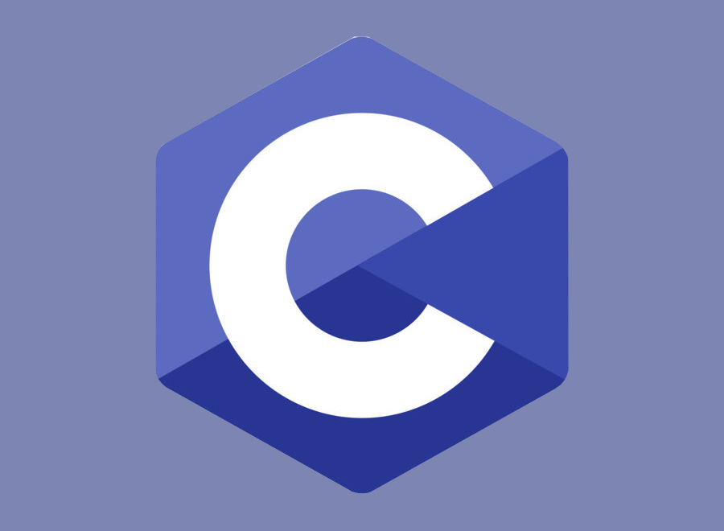

Le C
Le langage impératif et compilé. Un langage bas niveau.

Les langages de programmation
C est un langage de programmation impératif généraliste, de bas niveau. Inventé au début des années 1970
pour réécrire Unix, C est devenu un des langages les plus utilisés, encore de nos jours. De nombreux langages
plus modernes comme C++, C#, Java et PHP ou JavaScript ont repris une syntaxe similaire au C et reprennent en
partie sa logique. C offre au développeur une marge de contrôle importante sur la machine (notamment sur la
gestion de la mémoire) et est de ce fait utilisé pour réaliser les « fondations » (compilateurs, interpréteurs…)
de ces langages plus modernes.
C est un langage de programmation procédural et généraliste. Il est qualifié de langage de bas niveau dans
le sens où chaque instruction du langage est conçue pour être compilée en un nombre d'instructions machine
assez prévisible en termes d'occupation mémoire et de charge de calcul. En outre, il propose un éventail de
types entiers et flottants conçus pour pouvoir correspondre directement aux types de donnée supportés par le
processeur. Enfin, il fait un usage intensif des calculs d'adresse mémoire avec la notion de pointeur.
Hormis les types de base, C supporte les types énumérés, composés, et opaques.
Il ne propose en revanche aucune opération qui traite directement des objets de plus haut niveau
(fichier informatique, chaîne de caractères, liste, table de hachage…). Ces types plus évolués doivent
être traités en manipulant des pointeurs et des types composés. De même, le langage ne propose pas en standard
la gestion de la programmation orientée objet, ni de système de gestion d'exceptions. Il existe des fonctions
standards pour gérer les entrées-sorties et les chaînes de caractères, mais contrairement à d'autres langages,
aucun opérateur spécifique pour améliorer l'ergonomie. Ceci rend aisé le remplacement des fonctions standards par
des fonctions spécifiquement conçues pour un programme donné.
C++ est un langage de programmation compilé permettant la programmation sous de multiples paradigmes,
dont la programmation procédurale, la programmation orientée objet et la programmation générique.
Ses bonnes performances, et sa compatibilité avec le C en font un des langages de programmation les plus
utilisés dans les applications où la performance est critique.
Créé initialement par Bjarne Stroustrup dans les années 1980, le langage C++ est aujourd'hui normalisé par l'ISO.
Sa première normalisation date de 1998 (ISO/CEI 14882:1998), ensuite amendée par l'erratum technique de 2003
(ISO/CEI 14882:2003). Une importante mise à jour a été ratifiée et publiée par l'ISO en septembre 2011 sous le
nom de ISO/IEC 14882:2011, ou C++113. Depuis, des mises à jour sont publiées régulièrement : en 2014
(ISO/CEI 14882:2014, ou C++144), en 2017 (ISO/CEI 14882:2017, ou C++175) puis en 2020
(ISO/IEC 14882:2020, ou C++206).
En langage C, ++ est l'opérateur d'incrémentation, c'est-à-dire l'augmentation de la valeur d'une variable de 1.
C'est pourquoi C++ porte ce nom : cela signifie que C++ est un niveau au-dessus de C.
Python est un langage de programmation interprété, multi-paradigme et multiplateformes.
Il favorise la programmation impérative structurée, fonctionnelle et orientée objet.
Il est doté d'un typage dynamique fort, d'une gestion automatique de la mémoire par ramasse-miettes et
d'un système de gestion d'exceptions ; il est ainsi similaire à Perl, Ruby, Scheme, Smalltalk et Tcl.
Le langage Python est placé sous une licence libre proche de la licence BSD3 et fonctionne sur la plupart des
plates-formes informatiques, des smartphones aux ordinateurs centraux4, de Windows à Unix avec notamment GNU/Linux
en passant par macOS, ou encore Android, iOS, et peut aussi être traduit en Java ou .NET. Il est conçu pour optimiser
la productivité des programmeurs en offrant des outils de haut niveau et une syntaxe simple à utiliser.
Il est également apprécié par certains pédagogues qui y trouvent un langage où la syntaxe, clairement séparée des
mécanismes de bas niveau, permet une initiation aisée aux concepts de base de la programmation.
Python est un langage de programmation qui peut s'utiliser dans de nombreux contextes et s'adapter à tout type d'utilisation
grâce à des bibliothèques spécialisées. Il est cependant particulièrement utilisé comme langage de script pour automatiser
des tâches simples mais fastidieuses, comme un script qui récupérerait la météo sur Internet ou qui s'intégrerait dans un
logiciel de conception assistée par ordinateur afin d'automatiser certains enchaînements d'actions répétitives.
On l'utilise également comme langage de développement de prototype lorsqu'on a besoin d'une application
fonctionnelle avant de l'optimiser avec un langage de plus bas niveau.
Il est particulièrement répandu dans le monde scientifique, et possède de nombreuses bibliothèques optimisées
destinées au calcul numérique.
Java est un langage de programmation orienté objet créé par James Gosling et Patrick Naughton, employés de Sun Microsystems,
avec le soutien de Bill Joy (cofondateur de Sun Microsystems en 1982), présenté officiellement le 23 mai 1995 au SunWorld.
La société Sun a été ensuite rachetée en 2009 par la société Oracle qui détient et maintient désormais Java.
Une particularité de Java est que les logiciels écrits dans ce langage sont compilés vers une représentation
binaire intermédiaire qui peut être exécutée dans une machine virtuelle Java (JVM) en faisant abstraction du système
d'exploitation.
Le langage Java reprend en grande partie la syntaxe du langage C++. Néanmoins, Java a été épuré des concepts les plus
subtils du C++ et à la fois les plus déroutants, tels que les pointeurs et références, ou l’héritage multiple contourné
par l’implémentation des interfaces. De même, depuis la version 8, l'arrivée des interfaces fonctionnelles introduit
l'héritage multiple (sans la gestion des attributs) avec ses avantages et inconvénients tels que l'héritage en diamant.
Les concepteurs ont privilégié l’approche orientée objet de sorte qu’en Java, tout est objet à l’exception des types
primitifs (nombres entiers, nombres à virgule flottante, etc.) qui ont cependant leurs variantes qui héritent de
l'objet Object (Integer, Float, ...).
Java permet de développer des applications client-serveur. Côté client, les applets sont à l’origine de la notoriété du langage.
C’est surtout côté serveur que Java s’est imposé dans le milieu de l’entreprise grâce aux servlets,
le pendant serveur des applets, et plus récemment les JSP (JavaServer Pages) qui peuvent se substituer à PHP, ASP et ASP.NET.
Java a donné naissance à un système d'exploitation (JavaOS), à des environnements de développement (eclipse/JDK),
des machines virtuelles (MSJVM (en), JRE) applicatives multiplate-forme (JVM), une déclinaison pour les périphériques
mobiles/embarqués (J2ME), une bibliothèque de conception d'interface graphique (AWT/Swing), des applications lourdes
(Jude, Oracle SQL Worksheet, etc.), des technologies web (servlets, applets) et une déclinaison pour l'entreprise (J2EE).
La portabilité du bytecode Java est assurée par la machine virtuelle Java, et éventuellement par des bibliothèques standard
incluses dans un JRE. Cette machine virtuelle peut interpréter le bytecode ou le compiler à la volée en langage machine.
La portabilité est dépendante de la qualité de portage des JVM sur chaque OS.
Ruby est un langage de programmation libre. Il est interprété, orienté objet et multi-paradigme.
Le langage a été standardisé au Japon en 2011 (JIS X 3017:2011), et en 2012 par l'Organisation internationale
de normalisation (ISO 30170:2012).
Yukihiro « Matz » Matsumoto est le créateur de Ruby. Frustré par son expérience en développement Smalltalk et Lisp,
il commence la conception d'un nouveau langage en 1993 sous Emacs, puis publie une première version en 1995 sous licence libre.
Il enchaîne depuis les nouvelles versions.
Depuis l'arrivée d'une documentation anglophone, et du framework web Ruby on Rails en 2004,
Ruby a connu un certain engouement qui n'a cessé de croître jusqu'en 2008 dans le monde de la programmation,
puis une érosion lente si on en juge par son index Tiobe.
Ruby est fortement orienté objet et se rapproche ainsi du paradigme objet de Smalltalk.
Malgré cet aspect exclusivement objet, la programmation procédurale est possible et fréquente.
Ruby utilise une syntaxe simple, inspirée par Eiffel et Ada.
Le langage est souvent présenté comme évitant au maximum les mauvaises surprises, selon le principe de moindre
surprise14. Mais puisqu'il n'est pas possible d'éviter la surprise de tous les utilisateurs,
Yukihiro Matsumoto précise qu'il cherche surtout à éviter sa propre surprise15. Ainsi, plus on connaît le langage,
plus on connaît la logique de son auteur, et moins on s'étonne des fonctionnalités que l'on découvre.

JavaScript est un langage de programmation de scripts principalement employé dans les pages web interactives et à ce titre
est une partie essentielle des applications web. Avec les langages HTML et CSS, JavaScript est au cœur des langages utilisés
par les développeurs web. Une grande majorité des sites web l'utilisent, et la majorité des navigateurs web disposent d'un
moteur JavaScript pour l'interpréter.
JavaScript est aussi employé pour les serveurs Web6 avec l'utilisation (par exemple) de Node.js ou de Deno.
JavaScript a été créé en 1995 par Brendan Eich et intégré au navigateur web Netscape Navigator 2.0. L'implémentation
concurrente de JavaScript par Microsoft dans Internet Explorer jusqu'à sa version 9 se nommait JScript,
tandis que celle d'Adobe Systems se nommait ActionScript. JavaScript a été standardisé sous le nom d'ECMAScript en juin 1997
par Ecma International dans le standard ECMA-262. La version en vigueur de ce standard depuis juin 2020 est la 11e édition.
C'est un langage orienté objet à prototype : les bases du langage et ses principales interfaces sont fournies par des objets.
Cependant, à la différence d'un langage orienté objets, les objets de base ne sont pas des instances de classes.
En outre, les fonctions sont des objets de première classe. Le langage supporte le paradigme objet, impératif et fonctionnel.
JavaScript est le langage possédant le plus large écosystème grâce à son gestionnaire de dépendances npm, avec environ 500 000 paquets en août 2017.

PHP: Hypertext Preprocessor, plus connu sous son sigle PHP (sigle auto-référentiel), est un langage de programmation libre,
principalement utilisé pour produire des pages Web dynamiques via un serveur HTTP, mais pouvant également fonctionner comme
n'importe quel langage interprété de façon locale. PHP est un langage impératif orienté objet.
PHP a permis de créer un grand nombre de sites web célèbres, comme Facebook et Wikipédia. Il est considéré comme une des bases
de la création de sites web dits dynamiques mais également des applications web.
PHP est un langage de script utilisé le plus souvent côté serveur : dans cette architecture, le serveur interprète le code
PHP des pages web demandées et génère du code (HTML, XHTML, CSS par exemple) et des données (JPEG, GIF, PNG par exemple)
pouvant être interprétés et rendus par un navigateur web. PHP peut également générer d'autres formats comme le WML, le SVG
et le PDF.
Il a été conçu pour permettre la création d'applications dynamiques, le plus souvent développées pour le Web.
PHP est le plus souvent couplé à un serveur Apache bien qu'il puisse être installé sur la plupart des serveurs HTTP
tels que IIS ou nginx. Ce couplage permet de récupérer des informations issues d'une base de données, d'un système de fichiers
(contenu de fichiers et de l'arborescence) ou plus simplement des données envoyées par le navigateur afin d'être interprétées
ou stockées pour une utilisation ultérieure.